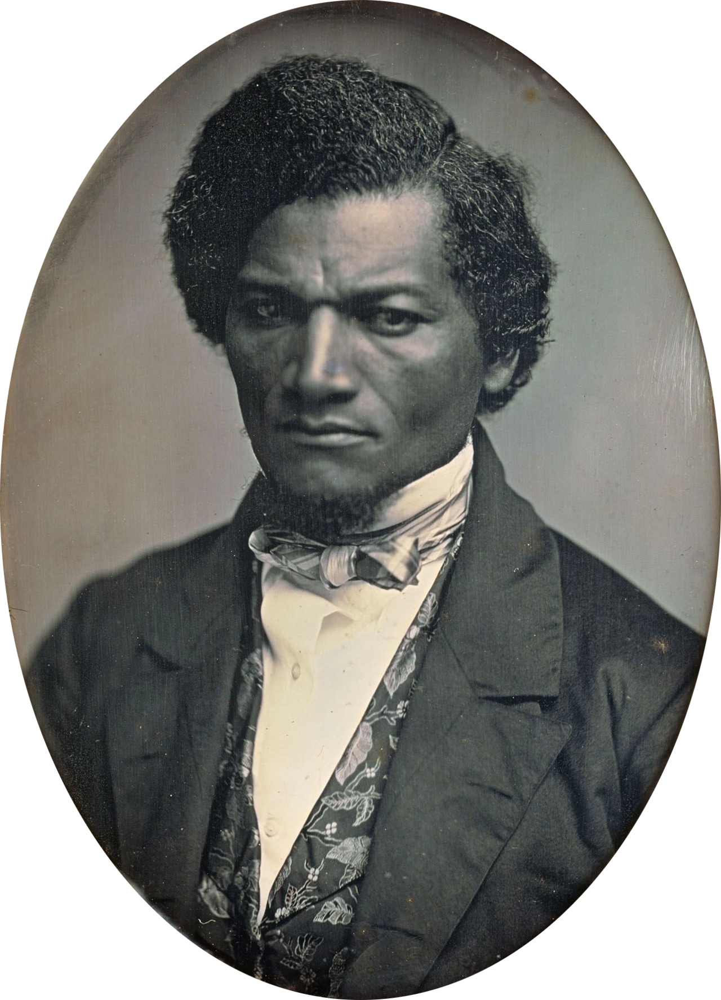
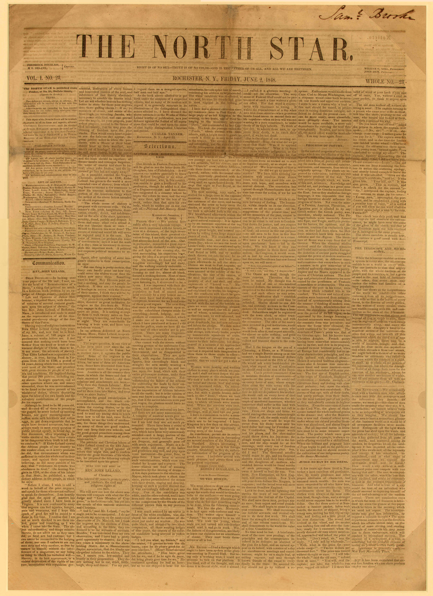

If someone else controls where your cause gets to speak, they control what it gets to say, and whether it gets heard at all.
Debate this
"A cause should never give its opponents a platform, not even to prove them wrong."
Goal of today
What you'll walk out with
By the end of class you'll have wrestled with three ideas that decide whether a cause ever gets heard: whoever owns the press owns the story, moral suasion as a theory of change, and the difference between owning your audience and renting it. Frederick Douglass and his paper, The North Star, run through all three. You go deeper Thursday; today we dig in together.
One rally · three newspapers
Same 200 people. Same peaceful rally for a cap on rent. Same afternoon. Three papers cover it.
The big city daily (owned by real-estate money)
"Angry Mob Snarls Downtown Traffic"
A neutral wire service
"About 200 Attend Rally Over Housing Costs"
The tenants' own newsletter
"200 Neighbors Stand Together for Homes They Can Afford"
What does that first headline do to them? Which word is doing the damage? And what can the tenants' own paper do that the other two can't?
Here's the idea
Whoever owns the press owns the story.
When someone else controls where you get to speak, they control three things at once: whether you're covered at all, how you're framed when you are ("mob" or "neighbors"), and what gets cut, usually the reason you showed up in the first place.
So the question becomes: what do you do when the people with the printing presses will never tell your story straight?
William Lloyd Garrison, editor of The Liberator (Library of Congress, public domain).
On his own side
The young Frederick Douglass was the most powerful speaker in American abolition. The white leaders around William Lloyd Garrison wanted him to supply the raw facts of his enslavement and leave the arguing to them. Their line: "Give us the facts, we'll take care of the philosophy." He was welcome as evidence. He was not welcome as the author.
If even the people on your side will only let you be the evidence, never the author, what do you do?

Frederick Douglass, daguerreotype by Samuel J. Miller, around 1847 (Art Institute of Chicago, public domain).
His answer: in 1847 Douglass founded The North Star in Rochester, New York, a newspaper owned, edited, and run by a formerly enslaved man.
He would own the paper and do both, the facts and the philosophy.
Its motto: "Right is of no Sex, Truth is of no Color, God is the Father of us all, and we are all Brethren."
The paper itself

The North Star, Rochester, N.Y., June 2, 1848, the paper Douglass owned (public domain).
He was already the most famous speaker in the movement. Why build and run an entire newspaper on top of that?
His theory of change
Douglass rarely reached for a law or a weapon. His main tool was moral: make people feel a wrong so sharply they can no longer defend it.
Name a cause working today that fights the same way, by moving hearts and consciences more than by passing a law.
Here's the idea
Moral suasion: a theory of change that moves people by testimony, argument, and appeal to conscience, until the wrong becomes impossible to defend.
Douglass's sharpest version worked by the gap.
He took a value the country already claimed to hold ("all men are created equal," the Fourth of July) and held it against what the country was actually doing, until the distance was unbearable and someone had to close it. He didn't reject American ideals. He turned them into the argument.
A press of our own, nearby
The first US newspaper devoted entirely to abolishing slavery was not printed in Boston or New York. It was printed in Jonesborough, in the mountains of East Tennessee, about an hour over the ridge from Boone, by a Quaker named Elihu Embree in 1820, twenty-seven years before The North Star. His paper was The Emancipator. Embree also enslaved people himself, and argued only for gradual emancipation.
Put Embree's Emancipator next to Douglass's North Star. What could Douglass's paper do, precisely because of who ran it, that Embree's never could?
Douglass's lesson in 2020s terms
Rent
Your audience lives on a platform someone else owns. They can change the rules, bury you, or ban you overnight, and your followers vanish with the account. (TikTok, Instagram, X.)
Own
An audience you can reach directly no matter what. An email list you can export, your own website, a printed thing in someone's hands. Slower to build, yours to keep.
Your cause lives on Instagram or TikTok. Do you own that audience, or are you renting it?
Workshop
Found your own paper.
Take one group member's real cause, or pick one: campus housinga local riverworkers at one joba school policy. You're launching a paper that cause controls. Fill all four boxes, then pick a spokesperson to report back.
Your masthead
One line that says what your paper stands for, the way "Right is of no Sex, Truth is of no Color" said it for Douglass.
The framing fight
Write the hostile headline your opponents would run about one event, then the headline your own paper runs about the exact same event.
Your moral-suasion line
Which value does your town or country already claim to hold? Write the one sentence that holds them to it.
Own the ground
Name the one channel you'd build and actually own first (list, site, printed thing), and why that one.
Your cause · Field Notebook
Open your Field Notebook. Own it, or rent it?
Work these three on your own, then we'll hear a few.
Right now, who tells your cause's story to the public: you, or someone else (a reporter, a platform's algorithm, no one)? Be specific.
Audit your channels. Which does your cause OWN (email list, website, a printed thing) and which does it RENT (Instagram, TikTok, someone else's coverage)? Which is it leaning on most?
Write your cause's one-sentence moral-suasion argument: the shared value you're holding people to, the way Douglass held the country to the Fourth of July.
Where we go from here
A rented platform is a landlord. It can evict you.
Thursday's module: Douglass in his own words (the founding statement of The North Star, and "What to the Slave Is the Fourth of July?"), an own-it-or-rent-it diagnostic, and the ethics thread this course keeps circling back to. Bring the notebook. We'll reconvene at the end to share.